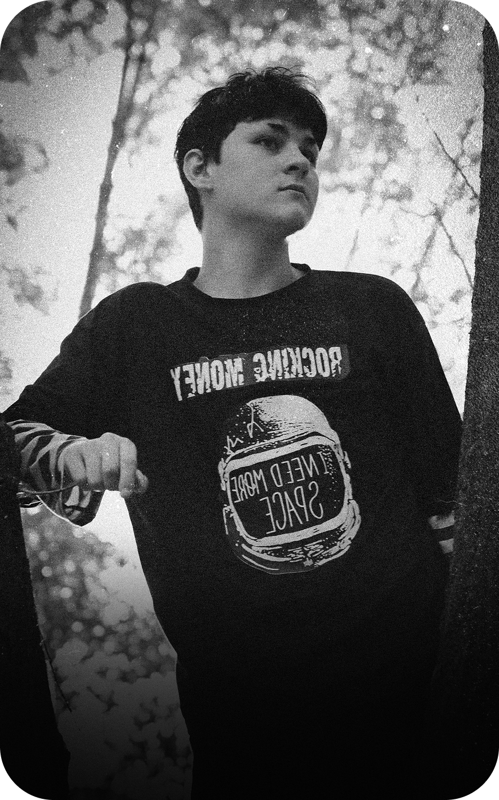

Я создаю
МОНТАЖ МОУШН СЪЕМКА

Даниил Мельников
режиссер монтажа
Привет! Я режиссер монтажа и оператор постановщик
с более чем 7-летним стажем в видеопродакшне.
Благодаря моим навыкам и опыту, могу реализовать
проекты практически любой сложности.
Этапы работы над видео:
Обработка звука, цветокоррекция, нарезка, разделение на главы Создание уникального стиля (вставки, плашки и т.д.) Музыка без авторских прав и sound дизайн
Опыт: 3D графика, дизайн, съемка видео, промо-ролики, корпоративные, моушн графика.
Работаю в автономном режиме: кидаешь исходники либо организуем съемку, ждешь 1-2 дня, получаешь крутой ролик — никаких сотен правок и нервотрепки, всё на чилле.